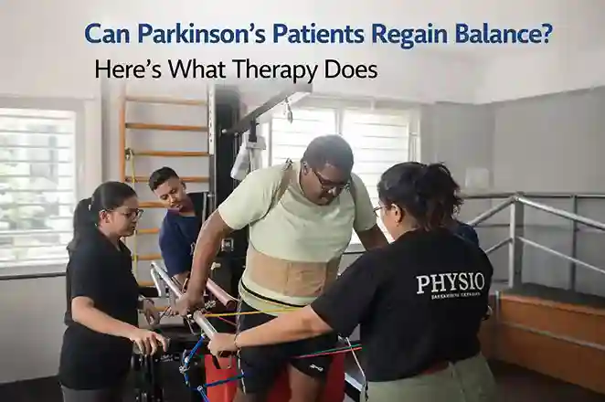
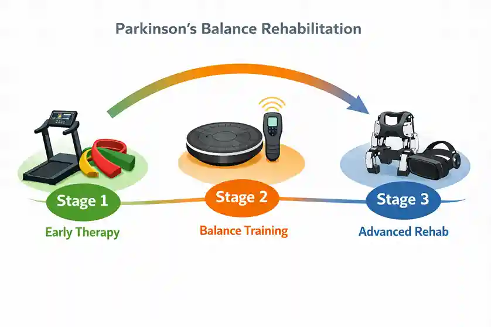
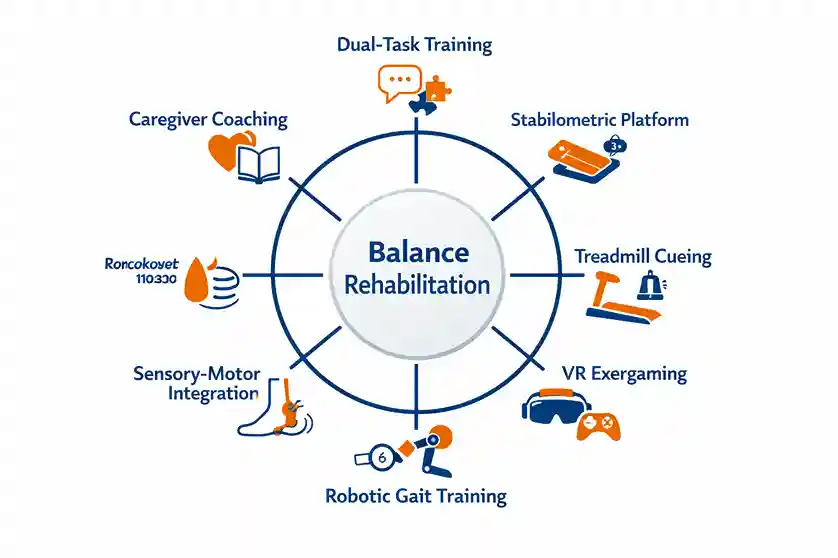

Can Parkinson's Patients Regain Balance? Here's What Therapy Does


09
Apr

Dr. Arpita Ganguly
BPT, MPT (Neuro), 6+ years clinical
experience in neuro rehabilitation & functional recovery
When Walking Across the Room Becomes the Hardest Part of the Day
Ramesh was 68 years old when his wife first noticed it. Not the tremor. Not the slower walk. It was the way he grabbed the door frame every time he passed through it. Quietly. Without saying a word. As if hoping nobody would notice.
A few months later, he missed the last step on the staircase. Then the bathroom floor became a place everyone dreaded. Within a year, what started as a small tremor in his left hand had quietly stolen his confidence, his independence, and his family's peace of mind.
If you are reading this as a family member or caregiver, that story probably sounds familiar. And if you are reading it as a patient yourself, you already know this fear.
The good news is this: Ramesh is walking without holding walls now. Because somebody finally told his family the truth that most websites do not say clearly enough.
Balance loss in Parkinson's is not a permanent sentence. It is a disrupted system that can be retrained.
This blog explains what actually happens to balance in Parkinson's disease, what therapy specifically does about it. We are going to cover angles that most articles completely ignore, because you deserve the full picture.
Why Parkinson's Attacks Balance in the First Place

Most people know Parkinson's causes tremors. Far fewer understand what it does to the system that keeps a person upright. And this gap in understanding is exactly why so many families wait too long before seeking therapy.
The Brain's Balance Circuit Runs on Dopamine
The basal ganglia, a group of structures deep in the brain, is responsible for coordinating movement, posture, and the automatic reactions that keep you from falling. It relies heavily on dopamine to function.
In Parkinson's disease, the neurons that produce dopamine in the substantia nigra begin to die. As this happens, the basal ganglia can no longer send the right postural correction signals fast enough. The brain's automatic reflex system, which in a healthy person kicks in within milliseconds of a stumble, slows down and eventually stops working reliably.
This is why a Parkinson's patient does not catch themselves the way a healthy person does. It is not weakness of the legs. It is a timing failure in the brain.
The Three Sensory Systems That Balance Relies On
The brain uses three sources of information to keep a person upright. It uses the vestibular system (inner ear balance signals), the visual system (what the eyes see), and the somatosensory system (pressure and position feedback from the feet and joints). In a healthy brain, these three signals are constantly weighed and blended.
Parkinson's disease disrupts this weighting process. The brain becomes unable to correctly prioritise or combine these three inputs. So on a dark night, or on uneven ground where the feet cannot send accurate signals, the whole system can fail.
Here is something that almost no patient-facing content explains clearly. Parkinson's patients fall most often not when they are focused on walking. They fall when they are doing two things at once.
Answering a question mid-step. Carrying groceries and turning around. Talking on the phone while crossing a doorway. The brain in Parkinson's cannot split its attention between motor control and another cognitive task. This is called dual-task interference, and it is one of the biggest causes of falls in daily life.
Understanding this is critical because therapy that only works on balance in isolation will not solve the real problem. Effective rehabilitation specifically trains the brain to maintain balance while doing other things simultaneously.
The Fall Problem Is Bigger Than Most Families Realise
Key Stat: Research published in npj Digital Medicine (2024) found that approximately 60% of all people living with Parkinson's disease experience at least one fall, with direct consequences including injuries, hospitalisations, reduced mobility, and shortened life expectancy.
India carries a particularly heavy part of this burden. According to a 2025 study published in Palliative Care & Social Practice, India accounts for roughly 10% of the global burden of Parkinson's disease, and the country's unique healthcare landscape means many patients go months or even years without access to structured rehabilitation.
What makes the fall problem even worse is what happens after the first fall. Fear. The patient starts moving less to avoid falling again. Reduced movement leads to muscle weakness and joint stiffness. This accelerates the very decline that caused the fall. It becomes a spiral.
Fear of Falling Is a Clinical Condition, Not Just Anxiety
This is something almost no blog mentions directly. Fear of falling in Parkinson's patients is recognised by rehabilitation specialists as a secondary clinical syndrome, not just a normal emotional response. It has its own dedicated therapy protocols within physiotherapy and psychological rehabilitation.
A patient who is clinically afraid of falling restricts their movement patterns, begins to shuffle, avoids open spaces, and gradually stops participating in family or social activities. The therapeutic response to this goes beyond balance exercises. It includes specific confidence-building progressions, graded exposure techniques, and in many cases, joint involvement of a psychological rehabilitation specialist.
Worried about falls at home? Our Parkinson's care specialists at Apricot Care can assess both balance function and fall risk. Book a consultation today.
What Does the Research Actually Say About Balance Recovery?
Let's get into the evidence, because this is where the encouraging news lives.
A major network meta-analysis published in Frontiers in Neurology (2025) reviewed 55 randomised controlled trials and confirmed that exercise therapy significantly improves limb balance, emotional function, cognitive function, and overall quality of life in Parkinson's patients. Among nine types of therapy tested, dual-task aerobic training and exergaming therapy showed the strongest effects specifically on balance function.
Separately, a dose-response meta-analysis published in npj Parkinson's Disease (2025) analysed 30 studies with 2,932 participants and confirmed that physiotherapy is a key non-pharmacological intervention for improving postural control in Parkinson's patients, noting that balance impairments are often poorly responsive to medication alone.
This is a critical point. Medication manages symptoms. Physiotherapy rebuilds functional systems. The two are not interchangeable and both are needed.
The Neuroplasticity Angle That Changes Everything
Here is the scientific reason why balance therapy works at a brain level, and almost no general health blog explains this clearly enough.
Exercise triggers the release of Brain-Derived Neurotrophic Factor (BDNF), a protein that supports the survival and growth of neurons. In Parkinson's disease, research shows that the brain has a remarkable capacity to build compensatory neural pathways, allowing surviving circuits to take over some of the work that damaged dopamine pathways can no longer do.
When structured physical therapy is applied consistently, it does not just build muscle. It actively encourages the brain to reorganise itself. This is why Parkinson's rehabilitation shows the most meaningful improvements not after one or two sessions, but after sustained, progressive, structured programmes over several weeks.
Stage-by-Stage: What Balance Therapy Looks Like at Each Point in Parkinson's

One of the biggest gaps in most online content is that Parkinson's is treated as one single condition. In reality, the approach to balance therapy changes significantly depending on disease stage. Physiotherapists use the Hoehn and Yahr Scale to categorise stage, and the therapy at each stage has a different focus.
| Stage | Balance Challenge | Primary Therapy Focus |
|---|---|---|
| Early (H&Y 1-2) | Mild instability, dual-task difficulty, reduced gait variability | Proactive postural training, gait education, dual-task practice, resistance and aerobic exercise |
| Moderate (H&Y 2-3) | Reactive balance failures, freezing of gait, fear of falling emerges | Stabilometric platform training, sensory-motor integration, auditory cueing, fall confidence therapy |
| Advanced (H&Y 3-4) | High fall risk, limited independent mobility, caregiver dependency | Robotic-assisted gait training, VR balance therapy, home environment training, caregiver coaching |
Why Starting Early Makes the Biggest Difference
The American Physical Therapy Association's Clinical Practice Guideline recommends that the first physiotherapy assessment ideally happens at or before the start of medication, not months later when falls have already begun. The evidence consistently shows that patients who start structured balance therapy in early to moderate stages retain significantly more functional independence for longer periods.
The Therapy Tools That Are Producing Real Results in 2025

Dual-Task Training: Teaching the Brain to Walk and Think at the Same Time
This is the most underutilised approach in general physiotherapy and the most important one for daily life. In a structured dual-task programme, a patient practises walking while simultaneously performing a cognitive task such as counting backwards, answering questions, or carrying an object. The brain is trained to allocate attention to both without compromising balance.
Sensory-Motor Integration and Stabilometric Platform Training
A stabilometric platform measures and feeds back information about a patient's centre of mass in real time. The patient learns, through visual feedback on a screen, how to consciously correct their posture and weight distribution. Over time this teaches the brain to recalibrate the faulty sensory weighting described earlier.
Treadmill Training with Auditory Cueing
The basal ganglia in Parkinson's struggles to generate internal movement rhythm. External rhythmic cues such as a metronome beat or music with a consistent tempo can bypass this problem by providing an external timing signal. Treadmill training combined with auditory cueing helps patients re-establish a regular, controlled gait pattern with better stride length and timing.
Virtual Reality and Exergaming: The Evidence Is Now Solid
A meta-analysis of 12 randomised controlled trials reviewed by PMC/NIH confirmed that VR therapy improved Berg Balance Scale scores, Timed Up and Go test results, and 10-Metre Walk Test performance in Parkinson's patients. VR is particularly effective for dual-task balance training because the environment naturally requires the patient to react to unpredictable stimuli, which directly mirrors the real-world balance challenges they face.
Robotic-Assisted Gait Training for Advanced Stages
For patients who can no longer safely perform regular treadmill or floor-based training, robotic gait systems allow high-repetition, body-weight-supported movement patterning even in advanced Parkinson's. Research published through PMC (NIH) on Multi-Disciplinary Intensive Rehabilitation found that robotic-assisted MIRT programmes produced significant improvements in balance, posture, and walking ability with benefits lasting up to 3 months after discharge.
The Medication Window: The Most-Missed Factor in Parkinson's Balance Therapy
This section covers something that almost no general website talks about and that makes a significant difference in therapy outcomes.
Most Parkinson's patients are on levodopa or similar medication. These drugs work in cycles. During an "ON" period, motor function is close to its best. During an "OFF" period, before the next dose or as medication wears off, motor symptoms are at their worst.
The same set of balance exercises produces measurably different outcomes depending on whether they are performed during an ON window or an OFF window. Experienced neurological physiotherapists schedule therapy sessions within the patient's optimal ON window to maximise neuromotor responsiveness and learning.
Families can support this by keeping a simple daily log of when medication is taken and when the patient notices their movement is best. Sharing this log with the therapy team directly improves the targeting of sessions.
Speak with our Parkinson's physiotherapy team about scheduling sessions around your medication window for better outcomes. Reach our Apricot Care team today.
Balance Therapy Does Not End at the Clinic Door
One of the most overlooked aspects of Parkinson's balance rehabilitation is what happens outside the clinic. A one-hour therapy session has limited impact if the patient goes home to an environment full of fall hazards with a caregiver who does not know how to assist safely.
Home Environment as Part of the Therapy Plan
A complete rehabilitation approach includes a structured home environment assessment. The WHO Rehabilitation 2030 framework recommends that environmental modification be built into every neurorehabilitation plan, particularly for patients with progressive conditions.
- Removing loose rugs and low furniture that can catch shuffling feet
- Installing grab bars in the bathroom, beside the toilet, and at the bed
- Improving lighting in corridors and on staircases, particularly for night-time movement
- Marking floor transitions such as doorway level changes with coloured tape to alert the visual system
- Rearranging furniture to create clear, wider walking paths throughout the home
Teaching Caregivers the Right Way to Assist
Incorrect physical assistance from a caregiver can actually increase fall risk. Holding a patient by the arm pulls their centre of mass off-axis. Proper gait assistance techniques, safe spotting positions, and emergency response training for caregivers are part of a structured Parkinson's rehabilitation programme and significantly reduce injury risk.
The 2024 International Consensus Statement on Multidisciplinary Parkinson's Rehabilitation specifically identifies caregiver training as a core component of effective Parkinson's care, not an optional extra.
What 'Regaining Balance' Realistically Means
We want to be honest with you here, because you deserve a realistic picture.
Balance in Parkinson's is not typically restored to the level it was before disease onset. But that is not the right measure. The right question is: can this person move through their day with significantly less fall risk, greater confidence, and better independence than they have now?
The answer, for most patients who commit to structured rehabilitation, is yes.
Measurable outcomes that consistent balance therapy typically produces include:
- Reduced fall frequency and fall severity over a 3-6 month period
- Improved Timed Up and Go scores (a standard clinical measure of functional mobility)
- Expanded walking distance and confidence in community settings
- Reduced fear of falling and increased participation in family activities
- Better medication response when therapy is timed within optimal medication windows
What most articles also skip: Balance gains from Parkinson's therapy are not permanent without continued practice. The brain needs ongoing input. This is not a failure of therapy. It is the nature of neurological maintenance. A well-structured programme transitions from intensive clinic sessions to a home and community exercise routine that sustains the gains.
Therapy Approaches at a Glance: What Works for What
| Therapy Type | Best For | Key Benefit |
|---|---|---|
| Dual-Task Training | All stages, especially moderate | Prevents real-world falls during daily tasks |
| Sensory-Motor Integration | Early to moderate stage | Recalibrates faulty balance signalling |
| Treadmill + Auditory Cueing | Early to moderate stage | Restores gait rhythm and stride length |
| VR / Exergaming | Moderate to advanced | Engages reactive balance in a safe environment |
| Stabilometric Platform | Moderate stage | Biofeedback-driven posture correction |
| Robotic Gait Training | Advanced stage | High-repetition movement patterning with support |
| Caregiver Training | All stages | Reduces fall risk outside clinic hours |
Key Takeaways
- Balance loss in Parkinson's is neurological, not just muscular. The cause is dopamine pathway disruption in the basal ganglia, not leg weakness alone.
- 60% of Parkinson's patients experience falls. The consequences go beyond injury. They include fear, inactivity, and faster decline.
- Physiotherapy is the strongest non-pharmacological tool for postural control. Multiple 2025 meta-analyses confirm this.
- Stage-specific therapy matters. The approach at Hoehn & Yahr Stage 2 is fundamentally different from Stage 4.
- Dual-task training is the most under-discussed and most important technique for preventing real-world falls.
- Medication timing affects therapy outcomes. Scheduling sessions within the ON window significantly improves results.
- Balance rehabilitation extends into the home. Environmental modification and caregiver training are non-negotiable parts of the plan.
- Balance gains require maintenance. A transition from intensive sessions to a sustainable home exercise routine is essential.
If your loved one with Parkinson's disease has had a recent fall, or if balance has become a daily worry, the right structured rehabilitation can make a genuine difference. At Apricot Care Neurorehabilitation Centre, Pune, our neurological physiotherapy team works with Parkinson's patients across all disease stages using evidence-based balance therapy, robotic-assisted gait training, VR tools, and personalised home rehabilitation plans.
Here is the one question worth sitting with today: If balance therapy could reduce your loved one's fall risk by even 40%, what would that change for them, and for you?
Frequently Asked Questions
At what stage of Parkinson's should balance therapy
start?
As early as possible. The American
Physical Therapy Association guidelines recommend
starting physiotherapy at or around the time of initial diagnosis, ideally
alongside medication. Balance function that is protected early is much
easier to maintain than balance that has already significantly deteriorated.
How many sessions are typically needed to see
improvement?
Most structured programmes show measurable improvement in balance scores
within 4 to 8 weeks of consistent therapy. The research on multidisciplinary
programmes shows that benefits including improved posture, balance, and
walking ability can last up to 3 months after an intensive inpatient or
outpatient programme, provided a maintenance exercise routine is followed.
Can balance therapy reduce the risk of future falls?
Yes. Multiple systematic reviews confirm that physiotherapy-based balance
programmes significantly reduce fall frequency in Parkinson's patients.
Wearable sensor-based assessment technology, as described in a 2024
study in npj Digital Medicine, can now predict fall
risk over a 5-year horizon with up to 85% accuracy at 2 years, allowing
therapy teams to intervene proactively before falls happen.
Is home-based balance therapy effective for Parkinson's
patients?
Yes, particularly when it is supervised and structured. Research on
telerehabilitation in India, cited in PMC's
review of multidisciplinary PD rehabilitation, confirms
that tablet-based and video-based physiotherapy can be effective, though
barriers including access to devices and connectivity remain a challenge in
some settings. Home therapy works best as a complement to clinic-based
sessions, not a replacement for them.
Can balance therapy be done alongside Parkinson's
medication?
Yes, and it should be. Medication and physiotherapy target different aspects
of Parkinson's. Timing therapy sessions to align with the patient's best ON
medication window maximises the benefit of both. Always inform your
physiotherapy team of your complete medication schedule.
Sources
- npj Digital Medicine (2024) - Fall prediction in Parkinson's using wearable sensors
- Frontiers in Neurology (2025) - Network meta-analysis of exercise therapies in PD
- npj Parkinson's Disease (2025) - Physiotherapy dose-response meta-analysis
- PMC / NIH - Update on Parkinson's Disease Rehabilitation
- PMC / NIH - Multi-Modal Rehabilitation Therapy in Parkinson's Disease
- Parkinsonism & Related Disorders (2025) - Balance exercise interventions in PD
- APTA Clinical Practice Guideline - Physical Therapist Management of PD
- Journal of Parkinson's Disease (2024) - International Consensus on Multidisciplinary PD Rehab
- Palliative Care & Social Practice (2025) - Parkinson's disease in India
- Frontiers in Neuroscience (2025) - Physical activity, neuroplasticity, AI in neurodegenerative disorders
About
author
Dr. Arpita Ganguly (PT) is a Neuro Physiotherapist at Apricot
Care, Pune.
With 6 years of experience, she specializes in neuro-rehabilitation, geriatric care, and balance training to help patients improve mobility and functional independence.
With 6 years of experience, she specializes in neuro-rehabilitation, geriatric care, and balance training to help patients improve mobility and functional independence.